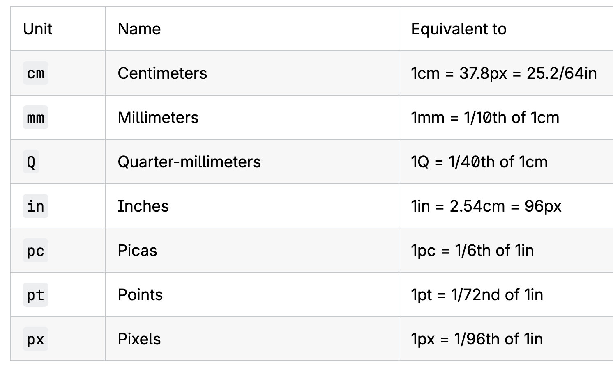
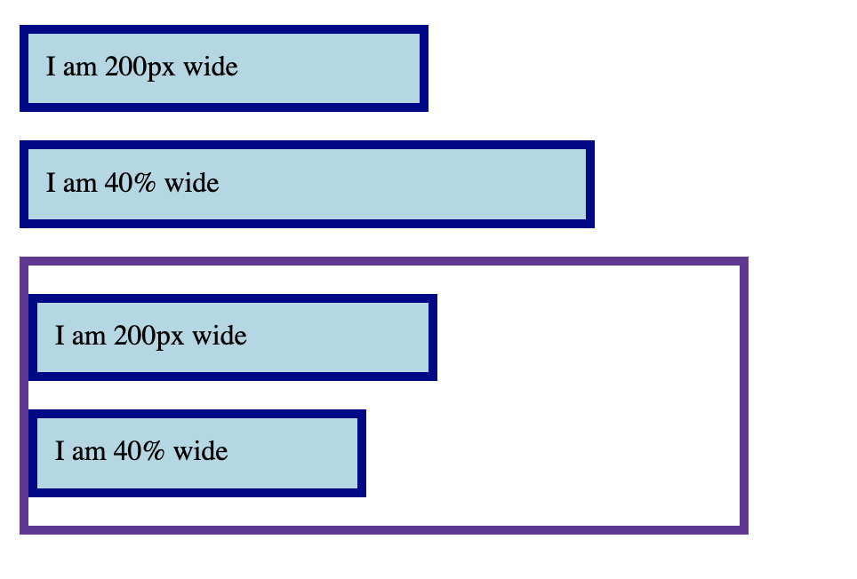
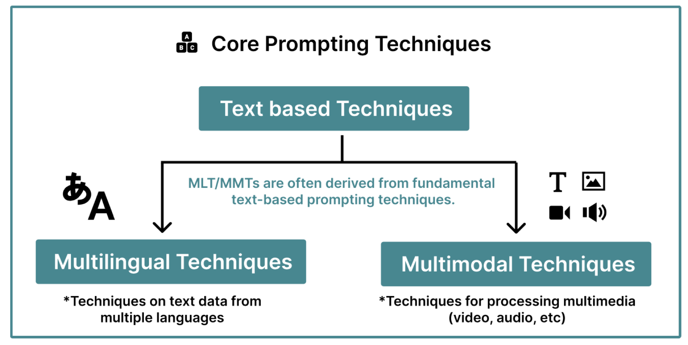
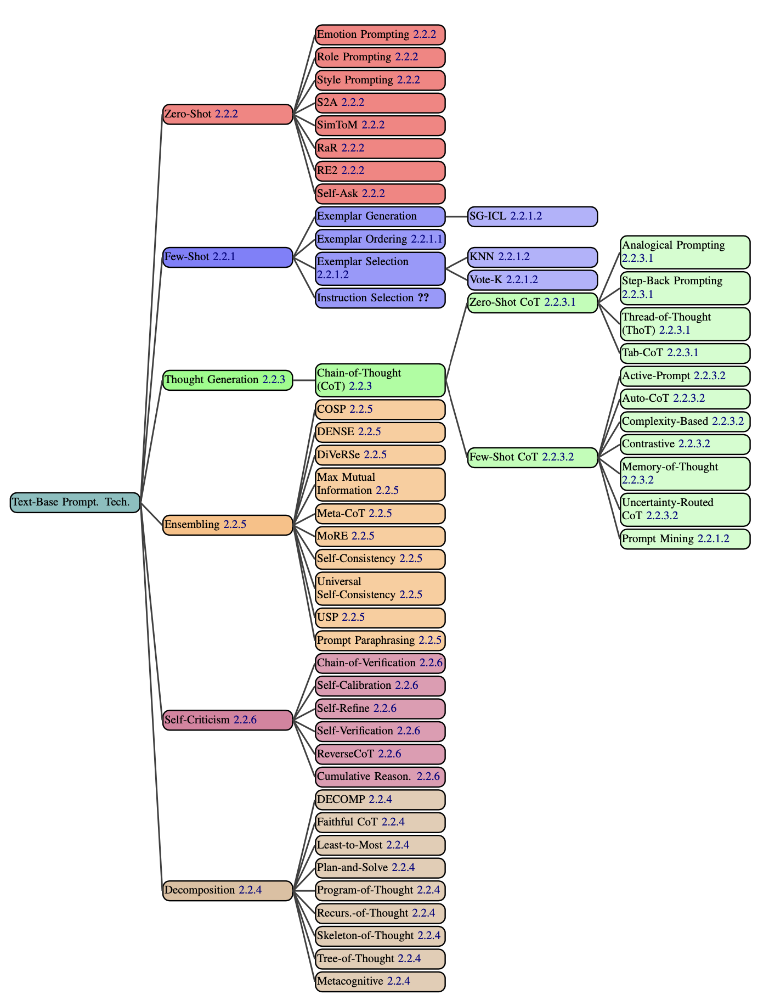
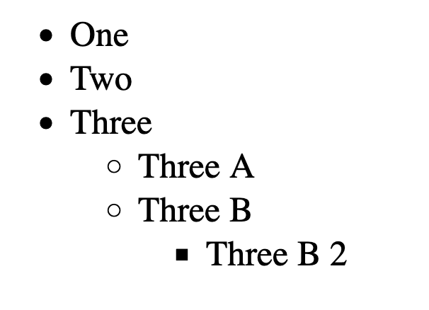
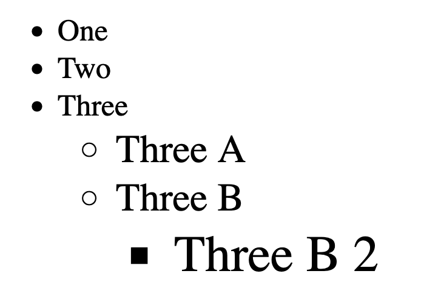
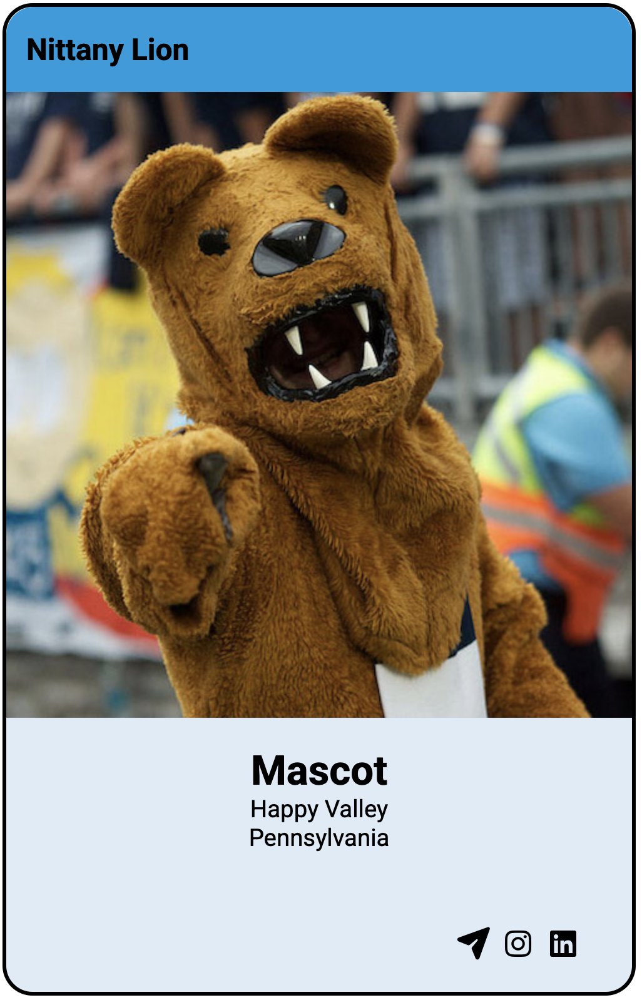

.feature {
button {
color: blue;
}
.link {
color: red;
}
.text {
font-size: 1.3em;
}
}.feature button {
color: blue;
}
.feature .link {
color: red;
}
.feature .text {
font-size: 1.3em;
}.feature {
.heading {
color: blue;
a {
color: green;
}
}
}.feature {
+ .heading {
color: blue;
}
> p {
font-size: 1.3em;
}
}Selects .headings that are immediate sibling of
.feature
.feature {
+ .heading {
color: blue;
}
> p {
font-size: 1.3em;
}
}Selects <p> that are direct children of
.feature
& = parent
selector when nesting.feature {
& button {
color: blue;
}
}.feature button {
color: blue;
}div {
width: 10cm;
height: 5cm;
background: black;
}A 10x5 cm rectangle

1px might not be equal one physical device pixel
1cm might be longer than actual centimeterem
rem
div {
width: 300px;
height: 100px;
}
div p {
width: 50%;
}<p>: 50% width of the parent div
.box {
background-color: lightblue;
border: 5px solid darkblue;
margin: 1em 0;
}
.wrapper {
width: 400px;
border: 5px solid;
}
.px {
width: 200px;
}
.percent {
width: 40%;
}<div class="box px">
I am 200px wide
</div>
<div class="box percent">
I am 40% wide
</div>
<div class="wrapper">
<div class="box px">
I am 200px wide
</div>
<div class="box percent">
I am 40% wide
</div>
</div>
Check it out!
wrapperHow does percentage value for margin-top work?

The Prompt Report: A Systematic Survey of Prompting Techniques

Demonstrations that guide the GenAI to accomplish a task
JSON)
Including phrases of “psychological relevance to human”
Including phrases of “psychological relevance to human”
html and css codeAct as a web developer. Be concise in your response. Ask followup questions, if necessary.
What does the following CSS code do (delimited in triple quotes). Please explain your answer:
"""
section {
position: absolute;
top: 50%;
left: 50%;
margin-right: -50%;
transform: translate(-50%, -50%);
}
"""html {
font-size: 16px;
}
.ems li {
font-size: 1.3em;
}
.rems li {
font-size: 1.3rem;
}<ul class="rems">
<li>One</li>
<li>Two</li>
<li>
Three
<ul>
<li>Three A</li>
<li>
Three B
<ul>
<li>Three B 2</li>
</ul>
</li>
</ul>
</li>
</ul>
html {
font-size: 16px;
}
.ems li {
font-size: 1.3em;
}
.rems li {
font-size: 1.3rem;
}<ul class="ems">
<li>One</li>
<li>Two</li>
<li>
Three
<ul>
<li>Three A</li>
<li>
Three B
<ul>
<li>Three B 2</li>
</ul>
</li>
</ul>
</li>
</ul>
Three B 2 (in
pixels)Three B 2 to be 30pxUsing rems class
Using ems class
html and css codestyles.css<h2>:
#333333You can upload files to ChatGPT
